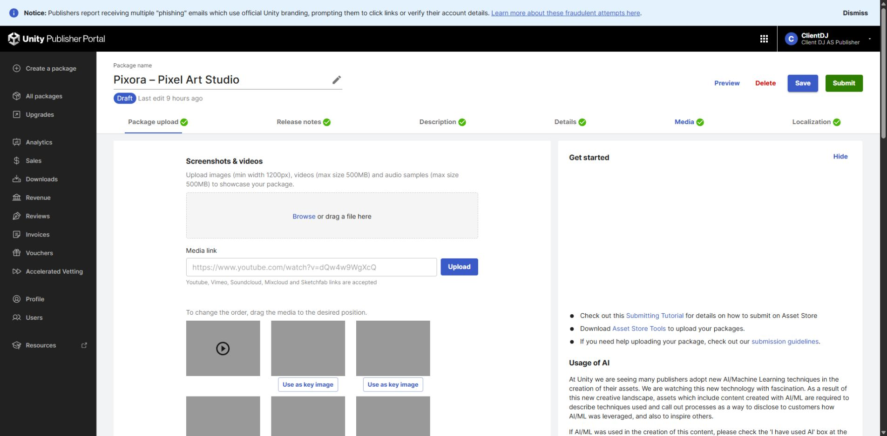

Tracefolio REPORTS & ISSUES
Tracefolio REPORTS & ISSUESPixora 심사 전 현황 — 패키지 최신화·최종 QA 보류
검증 대기1.0.0 초안과 미디어 저장을 확인했습니다. 기존 업로드 원본과 현재 소스 차이 및 최종 후보 설치·Validator 검증이 남아 있어 제출 보류입니다.
작업 결과
현재 판정은 제출 보류입니다. 1.0.0 판매 초안, 가격 $4.99, 영상1개·스크린샷16장·키 이미지3개를 확인했습니다. Submit은 누르지 않았습니다.

변경 내용
적용 내용
이번 회차는 현황 검토이며 제품·가격·판매 내용·패키지를 수정하거나 제출하지 않았습니다. 미디어 교체와 바이너리 릴리스 준비를 분리해 판정했습니다.
검증
현재 포털의 Package upload와 Media를 직접 열어 확인했습니다. 기존 로컬 업로드 원본의 SHA-256과 포함 에셋·메타데이터를 현재 파일과 다시 대조한 결과 37개 해시 비교가 다릅니다. 이는 차이가 있는 검사 항목 수이며 버그 개수나 미구현 기능 개수가 아닙니다. 개발 폴더 유출 후보는 0건입니다. 포털 바이너리를 새로 내려받아 해시를 비교하지는 않았습니다.
11월2일 공식 Validator 기록은 네 제품 모두 fail=0이지만 이후 변경 전 대상의 기록입니다. 최신 후보 통과로 간주하지 않았습니다. 11월3일 후보 생성 당시 아카이브 재읽기·소스 일치 기록도 실제 Unity 설치·실행을 대신하지 않습니다.
남은 사항
샘플 작업 문서의 개발 프리팹 참조를 수정한 후보는 Unity에서 재열기 검증이 남아 있습니다. 작업 문서 save→close→reopen→edit→re-export와 창별 Undo/Redo 실제 단축키 회귀도 최종 후보 기준 확인이 필요합니다.
공통 제출 전 항목: 변경을 고정한 최신 패키지 생성 → 새 프로젝트 설치 → 샘플 포함/제거 컴파일 → 공식 Validator와 영향 범위 실제 UI·언어·샘플 회귀 → 같은 산출물 업로드와 저장·해시 대조. 홍보 영상의 직접 청취도 미실행으로 남아 있습니다. 포털의 일부 패키지 0 files 표시는 원인 미확인이며 빈 패키지로 단정하지 않습니다.
교훈 검토: 기존 산출물 고정·검증 대상 버전 구분·미실행 QA 표시 지침으로 충족하여 전역 지침 변경은 없습니다.
작업 시간
- 제안 시간: 5
10분. 패키지 대조와 과거 Validator 대상 확인으로 초과, 보고 공개에35분 추가 안내. - 실제로 완료된 시간: 2026-11-03 12:28:54 KST 시작. 12:40 KST 기준 약11분 경과, 검토 결과 공개 중. 배포 완료 시각은 채팅에서 별도 확인.
- XERJ: 미사용 — 코드 심볼 검색 불필요. 실제 포털과 아카이브·현재 파일 해시 및 기존 실행 기록 대조.